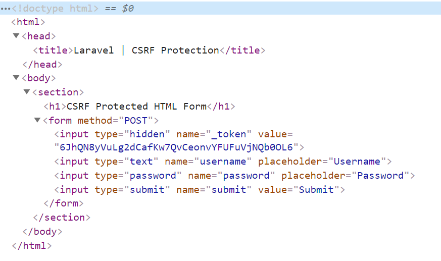

CSRF:
Cross site request forgery
Cross-site request forgery (also known as CSRF) is a web security vulnerability that allows an attacker to induce users to perform actions that they do not intend to perform.

It allows an attacker to partly circumvent the same origin policy, which is designed to prevent different websites from interfering with each other. In a successful CSRF attack, the attacker causes the victim user to carry out an action unintentionally. For example, this might be to change the email address on their account, to change their password, or to make a funds transfer. Depending on the nature of the action, the attacker might be able to gain full control over the user's account. If the compromised user has a privileged role within the application, then the attacker might be able to take full control of all the application's data and functionality.
How does CSRF work?
- A relevant action : There is an action within the application that the attacker has a reason to induce. This might be a privileged action (such as modifying permissions for other users) or any action on user-specific data (such as changing the user's own password).
- Cookie-based session handling : Performing the action involves issuing one or more HTTP requests, and the application relies solely on session cookies to identify the user who has made the requests. There is no other mechanism in place for tracking sessions or validating user requests.
- No unpredictable request parameters : The requests that perform the action do not contain any parameters whose values the attacker cannot determine or guess. For example, when causing a user to change their password, the function is not vulnerable if an attacker needs to know the value of the existing password.
How to deliver a CSRF exploit
The delivery mechanisms for cross-site request forgery attacks are essentially the same as for reflected XSS. Typically, the attacker will place the malicious HTML onto a web site that they control, and then induce victims to visit that web site. This might be done by feeding the user a link to the web site, via an email or social media message. Or if the attack is placed into a popular web site (for example, in a user comment), they might just wait for users to visit the web site.
Note that some simple CSRF exploits employ the GET method and can be fully self-contained with a single URL on the vulnerable web site. In this situation, the attacker may not need to employ an external site, and can directly feed victims a malicious URL on the vulnerable domain. In the preceding example, if the request to change email address can be performed with the GET method,

How to construct a CSRF attack
Manually creating the HTML needed for a CSRF exploit can be cumbersome, particularly where the desired request contains a large number of parameters, or there are other quirks in the request. The easiest way to construct a CSRF exploit is using the CSRF PoC generator that is built in to Burp Suite Professional. Select a request anywhere in Burp Suite Professional that you want to test or exploit. From the right-click context menu, select Engagement tools / Generate CSRF PoC. Burp Suite will generate some HTML that will trigger the selected request (minus cookies, which will be added automatically by the victim's browser). You can tweak various options in the CSRF PoC generator to fine-tune aspects of the attack. You might need to do this in some unusual situations to deal with quirky features of requests. Copy the generated HTML into a web page, view it in a browser that is logged in to the vulnerable web site, and test whether the intended request is issued successfully and the desired action occurs.
